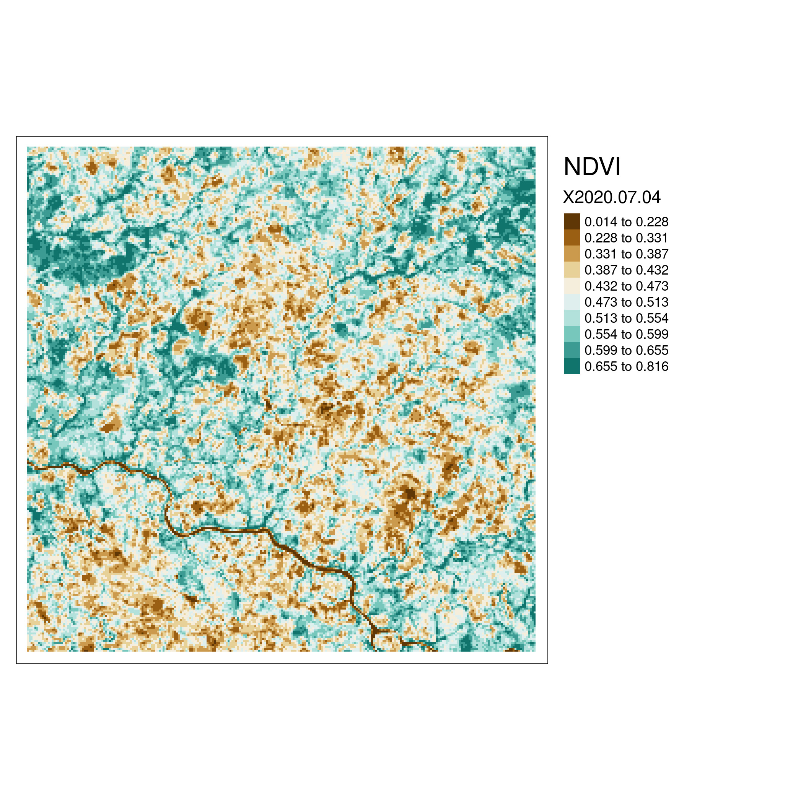

About MAPME
MAPME is an initiative by KfW, MapTailor Geospatial Consulting, and Agence Française de Développement to provide free and open access to GIS tools and Earth observation in international development cooperation. MAPME is a community-driven initiative to jointly develop tools and solutions that help us to plan, monitor and evaluate our projects with the help of earth observation and Geographical Information Systems (GIS). MAPME repositories contain R codes that will allow you to generate various statistics on land use / land cover and vegetation trends to gain insights in your project area – these methods can – for example – be used to assess outcome indicators # or to monitoring the progress in your projects. At the time being, the MAPME repositories encompass three main functionalities:
Analyze, maps and quantify land use / land cover (LULC), such as change in forest cover or cropland via the
{mapme.forest}and {mapme.classification}packages.vegetation productivity change and trend assessments, e.g. to map landscape degradation or rehabilitation via the present package
Assessing agricultural productivity through the FAO WaPOR plattform via the
{mapme.agriculture}package
About this package
mapme.vegetation facilities the pre-processing of optical satellite images (Sentinel-2), which can be used to perform supervised image classification to create maps of land use / land cover (LULC), or to assess trends and changes in vegetation cover in different years. It is a R package that supports users to query, download and preprocess Sentinel-2 satellite images. It helps to quickly establish a harmonized timeseries for surface reflectance bands and supports the calculation of a high number of vegetation indices. This data can than be used to derive information about vegetation trends e.g. in pre-post change assessements. Additionally, the package also plays nicely together with the {mapme.classification} package that can be used to build land use / land cover classifications based on the input data processed with mapme.vegetation. It uses the AWS STAC API that supplies Cloud Optimized GeoTiffs (COG) of Sentinel-2 L2A (top-of-canopy reflectance values) data. It allows for arbitrary queries for a time frame for any given location at the globe. Internally, the {gdalcubes} , package is used to quickly mask clouds, calculate vegetation indices and extract zonal statistics for areas of interest. This data can later be used in statistical analysis or for the establishment of classification and regression models.

Ressources
The tutorial for the usage of the {mapme.vegetation} can be found here. Please visit this page in order to get to know the API of mapme.vegetation.